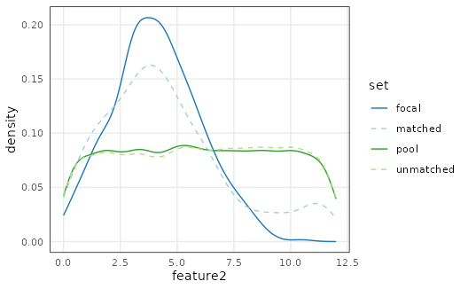
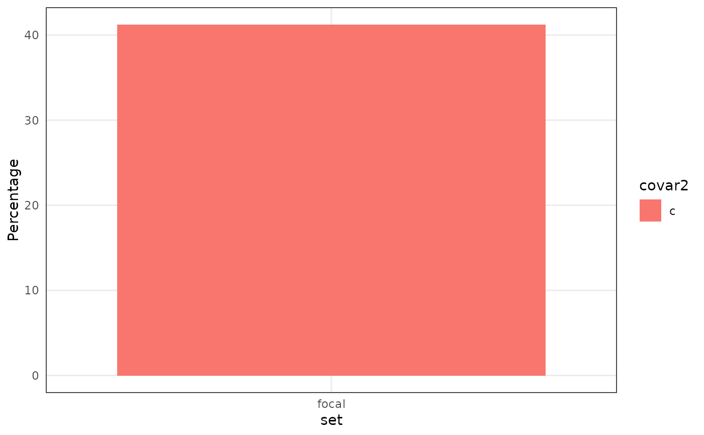
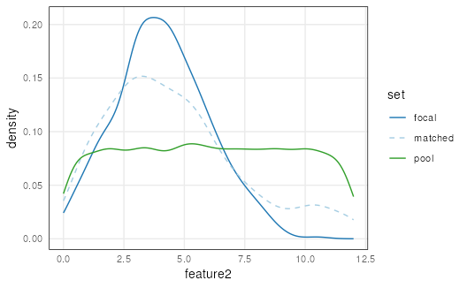
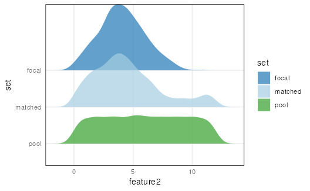
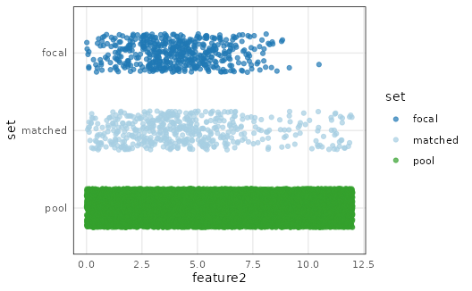

R/AllGenerics.R, R/methods-Matched.R
plotCovariate.RdThis function plots the distributions of a covariate from each matched set of a Matched object.
plotCovariate( x, covar = NULL, sets = c("focal", "matched", "pool", "unmatched"), type = NULL, log = NULL, ... ) # S4 method for Matched,character_OR_missing,character_OR_missing,character_OR_missing,character_OR_missing plotCovariate(x, covar, sets, type, log, thresh = 12)
| x | Matched object |
|---|---|
| covar | Character naming the covariate to plot. If multiple are provided, only the first one is used. |
| sets | Character vector describing which matched set(s) to include in the plot. Options are 'focal', 'matched', 'pool', or 'unmatched'. Multiple options are accepted. |
| type | Character naming the plot type. Available options are one of either 'ridges', 'jitter', 'lines', or 'bars'. Note that for large datasets, use of 'jitter' is discouraged because the large density of points can stall the R-graphics device. |
| log | Character vector describing which axis or axes to apply log-transformation. Available options are 'x' and/or 'y'. |
| ... | Additional arguments. |
| thresh | Integer describing the number of
unique values required to classify a numeric
variable as discrete (and convert it to a factor).
If the number of unique values exceeds |
Returns a plot of a covariate's distribution among matched sets.
By default, plotCovariate will sense the
class of covariate and make a plot best suited to
that data type. For example, if the covariate class
is categorical in nature then the type argument
defaults to 'bars'. type is set to 'lines' for
continuous covariates. These settings can also be overwritten
manually.
plotPropensity() to plot propensity scores.
## Matched example dataset mdf <- makeExampleMatchedDataSet(matched = TRUE) ## Visualize covariates plotCovariate(mdf)plotCovariate(mdf, covar = 'feature3')#>